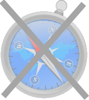
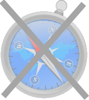
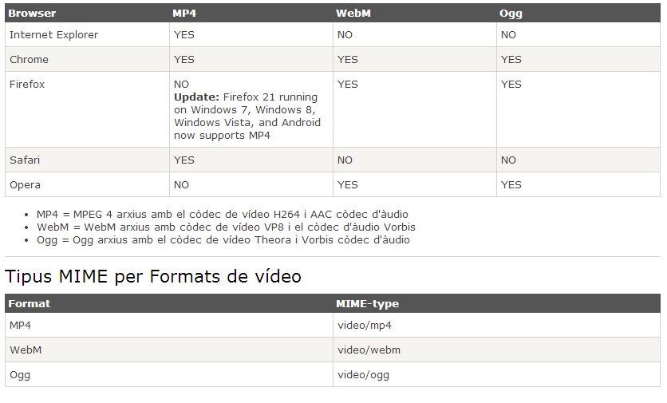
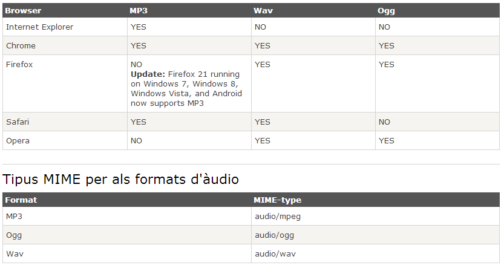

Internet Explorer 9
Windows Internet Explorer 9 (abbreviated as IE9) was released to the public on March 14, 2011 at 21:00 PDT.....
Creat per Eric Garcia
HTML5 és la cinquena revisió important del llenguatge bàsic de la World Wide Web.
Encara es troba en mode experimental, la qual cosa indica la mateixa W3C, encara que ja és usat per múltiples desenvolupadors web pels seus avenços, millores i avantatges.
HTML5 ofereix nous elements per millorar l'estructura.


Internet Explorer 9
Windows Internet Explorer 9 (abbreviated as IE9) was released to
the public on March 14, 2011 at 21:00 PDT.....


WWF
The World Wide Fund for Nature (WWF) is....


WWF services
Service 1
Service 2
Service 3


My family and I visited The Epcot center* this summer.


Do not forget to buy milk today.


HTML5 Posa a la nostre disposició nous tipus d'entrada de dades.


 

HTML5 Posa a la nostre disposició nous atributs als tipus d'entrada de dades.


Select images:


Username:
S'utilitza per dibuixar gràfics, sobre la marxa, a través de JavaScript.


var c=document.getElementById("myCanvas");var ctx=c.getContext("2d");ctx.fillRect(0,0,150,75);
ctx.moveTo(0,0);
ctx.lineTo(200,100);
ctx.stroke();
ctx.moveTo(0,0);ctx.lineTo(200,100);ctx.stroke();
ctx.beginPath();
ctx.strokeStyle="#FF0000";
ctx.arc(95,50,0,0,2*Math.PI);
ctx.stroke();
ctx.beginPath();ctx.strokeStyle="#FF0000";ctx.arc(95,50,0,0,2*Math.PI);
ctx.font="30px Arial";
ctx.fillText("Hello World",10,50);
ctx.font="30px Arial";ctx.strokeText("Hello World",10,50);
var img=document.getElementById("flashImg");
ctx.drawImage(img,5,5);
ctx.lineWidth = 8;
ctx.strokeStyle="#FF0000";
ctx.moveTo(0,0);
ctx.lineTo(200,200);
ctx.stroke();
ctx.moveTo(200,0);
ctx.lineTo(0,200);
ctx.stroke();
var img=document.getElementById("scream");ctx.drawImage(img,10,10);L'element canvas obre la porta a un univers de possibilitats, veiem alguns exemples:
Ja podem incrustar vídeos sense necessitat de flash player


L'atribut de control afegeix controls de vídeo, com reproducció, pausa i volum.
Actualment, hi ha 3 formats de vídeo compatibles amb l'element; MP4, WebM i Ogg :
Ja podem incrustar audio sense necessitat de flash player


L'atribut de control afegeix controls de vídeo, com reproducció, pausa i volum.
Actualment, hi ha 3 formats de àudio compatibles amb l'element; MP3, WAV i OGG :
Fem un exemple molt simple utilitzant tots els elements d'estructura:
Crear un únic formulari per fer una cerca a Google i Bing
El paràmetre de cerca s'ha d'enviar via GET es diu "q" i les URL de destí son:
Proveu l'element vídeo i audio
Podeu trobar un vídeo en diferents formats d'exemple a
Dibuixar un text personalitzat amb l'element canvas
Exemple:
L'hi afegirem una ombra
ctx.shadowColor = "black"; //Color de l'hombra
ctx.shadowOffsetX = 5; //Posició
ctx.shadowOffsetY = 5; //Posició
ctx.shadowBlur = 7; //Difuminat
Exemple:
Crear un comptador amb l'element canvas
myTimer = setInterval(draw,25);context.clearRect( x, i, ample, alt );Exemple: